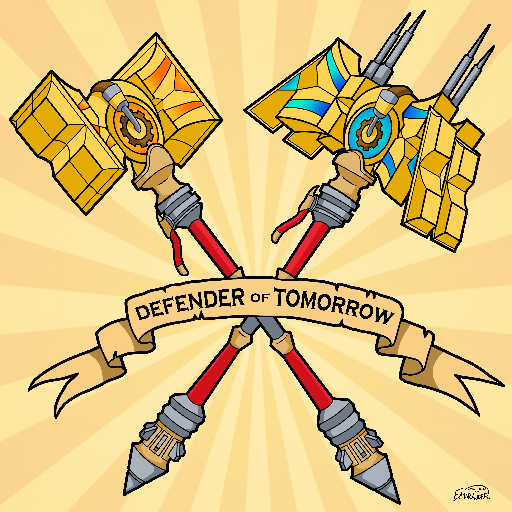

What kind of Stuff does Emily Make?
Traditional Art
Emily has been creating art her entire life. Only until recently, all of her work was done using traditional media, mostly pencil and paper. Over the years, she has passed from crayons, to colouring pencils, to markers, and to graphite pencils. She finds them to be easier to control, and offer the greatest amount of detail in artwork. In terms of traditional media, graphite pencil is right in her comfort zone, but she hopes to advance to media such as paint or anything that can add a splash of colour to her work.
.jpg)
This piece depicts two characters from the popular online video game League of Legends, of which Emily is a huge fan. They are representing her school the University of Ottawa against its rival Carleton University.
Most of her work is centered around creating fan art for various pop culture franchises, but League of Legends is by far her favourite. This piece took around 3 weeks to complete, through short, scattered drawing sessions. It is still one of her favourite pieces.
Digital Art
Emily has been creating digital art since September 2015, when she received a Wacom Intuos Pro drawing tablet as a gift. She has used the tablet very often to create colourful, cel-shaded creations which she enjoys sharing on her various art outlets, which can be found below.
In the future, Emily hopes to be able to move past cel-shaded drawings to realtistic and detailed painted illustrations.
Another piece depicting League of Legends, Emily draw her favourite character Jayce's transforming weapons crossed, with a banner bearing his epithet. She is particularly proud of the line art for this one.

Emily is also using her digital art as a small source of income, taking commissions not only for friends, but companies and organizations as well. Above is the logo that Emily designed for the newly rebranded Ottawa Pops Orchestra. She is a member of the orchestra on double bass.
Video
Video production is another passion of Emily's. She studied film for a year at Laurentian University for a year, but decided it was not for her. Despite this, she still enjoys making videos, including a cosplay music video from Ottawa Comic Con 2016, above.
She also recently accepted a position with the Telfer School of Management for video production, and she is enrolled in Video II class in her studies. She hopes to make videos professionally one day.